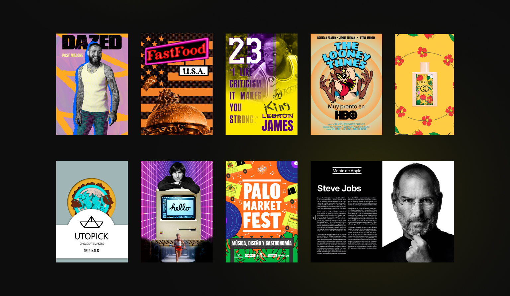

Selección
Piezas.
Toca cualquiera para verla en grande. Cada pieza lleva su propio acento — pero todas pasan por el mismo filtro: qué hay que decir, cómo decirlo y dónde decirlo.

Sobre la galería
Mientras los proyectos largos pulen el sistema, las piezas sueltas son el laboratorio. Cartelería para festivales, packaging conceptual, posts editoriales, exploraciones de campañas — cada una es una excusa para probar una técnica nueva, un sector distinto o una forma diferente de pensar la marca.
No tienen un brief de 40 páginas detrás. Tienen una idea, un soporte y un día. Funcionan como gimnasio visual: si no entrenas el ojo en frío, cuando llega el proyecto largo te falta repertorio. Aquí está parte de ese repertorio.
Las piezas sueltas son el sitio donde se equivoca uno barato. Los proyectos grandes son donde no puedes.
— Sobre el sentido de la galería
Selección
Toca cualquiera para verla en grande. Cada pieza lleva su propio acento — pero todas pasan por el mismo filtro: qué hay que decir, cómo decirlo y dónde decirlo.